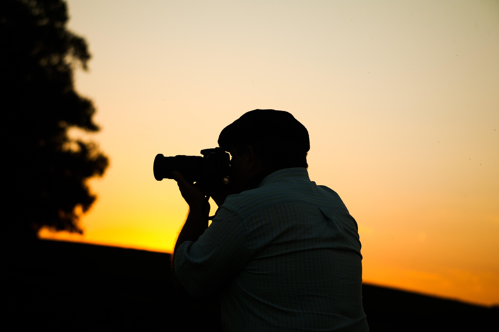

Autenticidade acima de tudo
Não forço poses. Crio um ambiente onde você se sente à vontade, e a magia acontece naturalmente. As melhores fotos são as que você nem percebe que foram tiradas.

Fotógrafo, contador de histórias e eterno apaixonado pela luz.
Tudo começou com a câmera do meu pai, guardada numa gaveta empoeirada. Aos 19 anos, peguei-a por curiosidade e fotografei meu primeiro pôr do sol. Naquele instante, descobri que a fotografia era minha forma de sentir o mundo.
Formado em Artes Visuais pela USP, mergulhei na fotografia documental e editorial. Trabalhei com revistas, marcas independentes e, aos poucos, encontrei meu caminho: registrar histórias de amor, família e conquistas com um olhar contemporâneo e humano.
Hoje, o Studio Lumen é o espaço onde transformo emoções em imagens — sempre com leveza, respeito e muita criatividade.

Três pilares guiam cada projeto que realizo — princípios que vão além da técnica.
Não forço poses. Crio um ambiente onde você se sente à vontade, e a magia acontece naturalmente. As melhores fotos são as que você nem percebe que foram tiradas.
A luz não é apenas iluminação — é emoção, atmosfera, narrativa. Estudo cada cenário para que a luz conte parte da história junto com você.
Anos depois, quando você olhar essas fotos, quero que sinta o cheiro, ouça a risada, reviva o abraço. Essa é a medida do meu sucesso.
Do primeiro café virtual ao álbum nas suas mãos — cada etapa é pensada com carinho.
Conversamos sobre seus sonhos, estilo e expectativas. Quero conhecer você antes de fotografar.
Defino locais, horários ideais de luz, moodboard visual e todos os detalhes logísticos.
No dia, minha energia é leve e divertida. Você se diverte — eu registro cada instante especial.
Edição artística cuidadosa, galeria online exclusiva e, se desejar, álbum físico premium.
Mais de 350 projetos entregues com excelência e avaliações 5 estrelas de clientes satisfeitos.
Câmeras full-frame, lentes prime e iluminação de estúdio para resultados impecáveis em qualquer condição.
Você não é mais um número. Cada cliente recebe atenção personalizada do início ao fim.
Início da carreira fotografando eventos universitários e pequenos ensaios para amigos.
Graduação em Artes Visuais e curso de fotografia de casamentos em Barcelona.
Abertura do estúdio com foco em fotografia contemporânea e lifestyle.
Featured no Wedding Brasil e publicação no portal Fearless Photographers.
Novos serviços de produção de conteúdo e parcerias com marcas premium.
Entre edições, reuniões de planejamento e sessões ao ar livre — assim é a rotina por trás das imagens que você ama.
Meu estúdio em Pinheiros, São Paulo, é um espaço acolhedor onde recebo clientes para conversas, seleção de álbuns e sessões intimistas. Mas meu coração bate mais forte quando estou ao ar livre, perseguindo a luz dourada do fim de tarde.


Adoraria ouvir sobre o seu projeto e descobrir como posso contar a sua história.